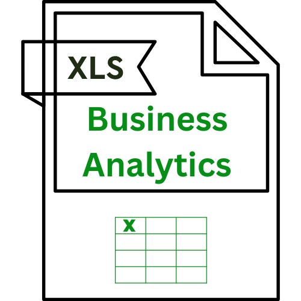
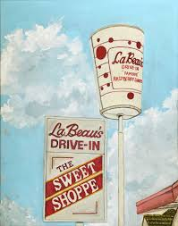

1. Home Page Gabrielle D. Loosli - Home Welcome to My Portfolio: Empowering Decisions with Data In today's fast-paced business environment, data is the cornerstone of informed decision-making. I'm Gabrielle D. Loosli, and this portfolio is a testament to my commitment to transforming raw data into actionable insights. My journey in business analytics is driven by a passion for uncovering trends, identifying opportunities, and solving complex problems through rigorous data analysis. Why Visit My Site? Potential employers, collaborators, and anyone interested in data-driven solutions will find this site valuable. You'll gain insight into my analytical capabilities, proficiency in essential tools like Excel, SQL, and R, and my track record of delivering impactful results. What Questions Will Visitors Expect? • "What are Gabrielle's core analytical skills?" • "How proficient is she with data analysis tools?" • "What kind of experience does she have in applying these skills?" • "Can she effectively communicate data-driven insights?" • "Does she have the ability to learn and adapt to new analytical challenges?" Essential Information Covered This portfolio provides a clear overview of my: • Technical skills (Excel, SQL, R Studio) • Analytical methodologies • Practical experience in data analysis • Educational background in business analytics • My ability to take data and make it presentable and understandable. Why Choose My Portfolio? My portfolio stands out due to its focus on practical application and clear communication. I don't just list skills; I demonstrate how I've used them to achieve tangible results. My commitment to continuous learning and my ability to adapt to new challenges make me a valuable asset in any data-driven environment. 2. Work Experience Page Gabrielle D. Loosli - Work Experience Transforming Data into Actionable Strategies My work experience has been pivotal in honing my analytical skills and applying them to real-world business challenges. Whether it's optimizing inventory levels, improving program efficiency, or facilitating student success, I've consistently leveraged data to drive positive outcomes. Back-End Program Assistant: Data-Driven Program Enhancement In my role as a Back-End Program Assistant, I've managed and analyzed data to enhance the New Student Mentoring Program. By tracking mentor hours, compiling scorecards, and reviewing mentor logs, I've ensured program accountability and identified areas for improvement. My ability to develop and implement projects has directly contributed to the program's effectiveness. New Student Mentor: Data-Informed Student Support As a New Student Mentor, I utilized spreadsheets to organize student information, monitor assignments, and track attendance. This data-driven approach enabled me to provide personalized support and ensure a smooth transition for freshmen. By collaborating with instructors and fellow mentors, I contributed to a more effective and valuable course experience. Team Lead and Schedule Coordinator: Operational Efficiency Through Analytics In the fast-paced environment of LaBeau’s Drive In, I managed demanding shifts and optimized operational processes. By creating spreadsheets to monitor inventory levels and analyze sales data, I provided insights that improved decision-making and operational planning. My leadership skills and ability to enhance operational processes have been instrumental in driving efficiency and performance. 3. Education Page Gabrielle D. Loosli - Education Building a Strong Analytical Foundation My Bachelor of Business Analytics from Brigham Young University-Idaho has provided me with a comprehensive understanding of data analysis, business intelligence, and related disciplines. My coursework has equipped me with the theoretical knowledge and practical skills necessary to excel in the field of data analytics. Relevant Coursework: Mastering Essential Concepts • Spreadsheet Analysis: Developing advanced Excel skills for data manipulation and analysis. • Financial Accounting: Understanding financial statements and their implications for business decisions. • Business Analytics: Learning statistical methods and data mining techniques. • Business Intelligence and Analytics: Gaining proficiency in data warehousing and reporting. • SQL: Mastering database querying and management. Continuous Learning: Staying Ahead in Analytics I believe that continuous learning is essential in the field of data analytics. I'm committed to staying updated with the latest tools, techniques, and trends. I plan to pursue further education and certifications to enhance my skills and knowledge.
 